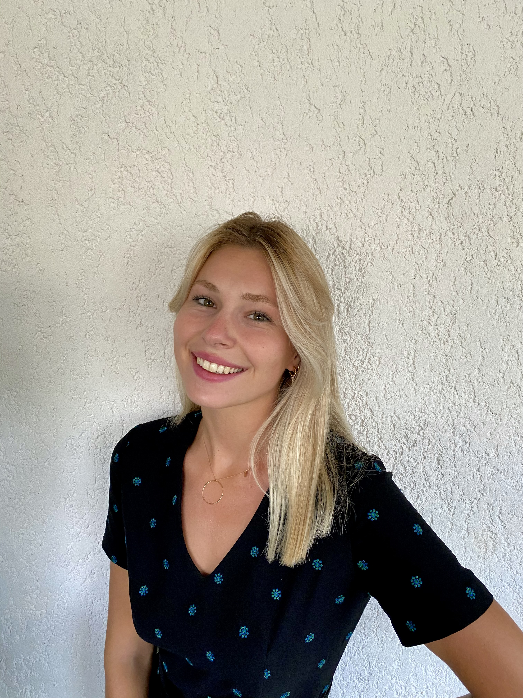

Hello, I'm Ilona Frey
Salut à tous, je m'appelle Ilona Frey, j'ai 22 ans et je suis étudiante en première année de Master en spécialisation Digital Marketing à Kedge Business School. J'aime beaucoup la mode et voyager. Sur ce site je vais vous faire une description de ce que j'aime et mes voyages.
Découvrez mon école
📚Ce que j'étudie📚
Je suis en Master 1 Digital Marketing et j'ai la chance de pouvoir apprendre le codage avec la matière Introduction to Web Development (by le Wagon)
- Social media et marketing de contenu
- Web Analytics
- Trust me, I'm an AI
- SEO et SEA
- Be-U Intelligence émotionnelle
- Stratégie marketing digital
Voici ci dessous un classement de mes trois plus beaux voyages avec des images pour illuster et des tips des villes à visiter !
🌏Mes voyages préférés🌏

La Thailande a été mon plus beau voyage. Ce pays a une superficie de 513 120 km² j'ai donc pu vister 3 lieux ; Koh Phangan, Koh Samui et Bangkok

Zanzibar est une toute petite île de 2461 km² mais qui regorge de végétations, de plages à perte de vue et des locaux d'une extrême gentillesse

L'algarve a été pour moi la plus belle région du Portugual. Mes deux trois villes préférées ont été Carrapateira pour le surf, Albufeira pour les sorties et Lagos pour la beauté de la ville.